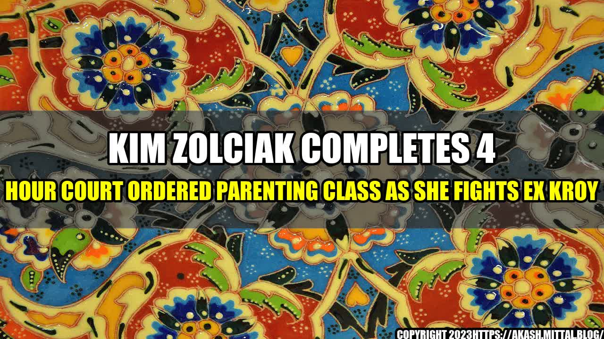

Kim Zolciak Completes 4 Hour Court Ordered Parenting Class as She Fights Ex Kroy

Kim Zolciak, star of the hit reality show "Don't Be Tardy," has completed a 4 hour parenting class as part of her court-ordered requirements in a custody battle with her ex-husband Kroy Biermann. The class, which covered topics such as co-parenting, communication, and child development, was attended by both Zolciak and Biermann.

According to reports, Zolciak and Biermann are currently fighting over custody of their four children. Zolciak is seeking primary custody while Biermann is seeking joint custody. The two were married for six years before divorcing in 2017.
Examples of Effective Co-Parenting
- Attending important events together, such as graduations and recitals
- Communicating respectfully and openly about the children's needs and concerns
- Making joint decisions about the children's education, healthcare, and other important matters
- Being flexible and understanding of each other's schedules and life circumstances
How Parenting Classes Can Benefit Co-Parenting Situations
Parenting classes can be a valuable resource for parents going through a divorce or custody battle. They can provide practical tools and strategies for effective co-parenting, as well as a forum for discussing common challenges and concerns. By attending parenting classes, parents can learn:
- Effective communication techniques that can help reduce conflict and improve collaboration
- Strategies for managing the children's schedules, activities, and other responsibilities
- Tips for promoting the children's emotional well-being and development
- Ways to work through conflicts and disagreements in a constructive and respectful manner
Conclusion
- Effective co-parenting requires open communication, mutual respect, and a willingness to work together for the children's best interests.
- Parenting classes can provide valuable tools and strategies for co-parenting couples, as well as a forum for discussing common challenges and concerns.
- By attending parenting classes and implementing what they have learned, co-parents can improve their relationship and create a healthier, more stable environment for their children.
Get the Latest News on Celebrity Custody Battles!
Sign up for our newsletter and never miss an update on the latest celebrity custody battles!
References: - https://radaronline.com/videos/kim-zolciak-completes-4-hour-court-ordered-parenting-class-fights-ex-kroy/ - https://www.parents.com/parenting/divorce/coping/how-to-be-a-good-co-parent-after-divorce/?page=2 - https://www.ourfamilywizard.com/knowledge-center/parenting-plans/benefits-taking-co-parenting-classes - https://www.psychologytoday.com/us/blog/co-parenting-after-divorce/201801/how-parenting-classes-can-help-co-parents-find-successful - https://www.huffpost.com/entry/9-co-parenting-rules-you-need-to-know-for-divorce_b_58a65db0e4b0fa149f9ac3d8 Hashtags: - #KimZolciakParentingClass - #CelebrityCustodyBattles - #EffectiveCoParenting SEO Keywords: Kim Zolciak, Co-Parenting, Parenting Class, Custody Battle, Divorce. Category: Entertainment/Celebrity News.
Curated by Team Akash.Mittal.Blog
Share on Twitter Share on LinkedIn